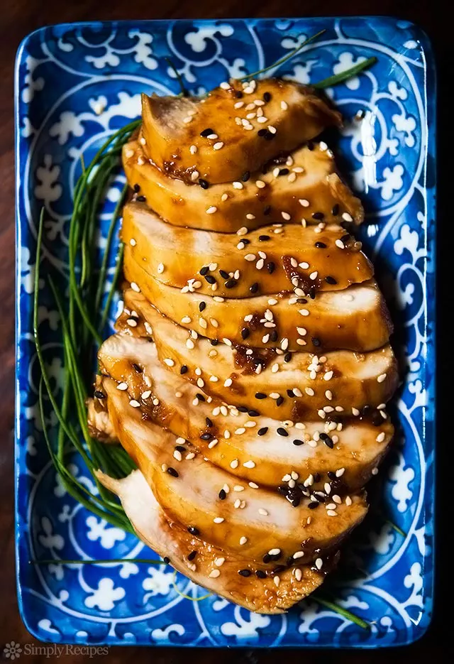

Teriyaki Chicken Breasts

How to Make Teriyaki Chicken
Classic teriyaki sauce is made with soy sauce, mirin (a sweet rice wine), and sake.
With these items in your pantry, you can make a simple but
perfect and easy teriyaki sauce for teriyaki chicken, steak, or salmon.
In this version of teriyaki chicken, we first poach skinless, boneless chicken breasts in homemade teriyaki sauce.
Then we boil the heck out of the sauce to reduce it to a syrupy glaze to pour back over the cooked chicken.
The result? Easy to make, low fat, perfectly tender teriyaki chicken breasts, every time.
Ingredients
- 3/4 cup soy sauce (or mix tamari and water in equal proportions to make 3/4 cup)
- 3/4 cup sake
- 3/4 cup mirin
- 4 tablespoons sugar
- A 1-inch piece of ginger, grated fine
- 1 1/4 to 1 1/2 pounds boneless, skinless chicken breasts (set out for 30 minutes to come to room temp)
- 2 to 3 tablespoons sesame seeds
Steps
-
Gently simmer the chicken in sauce made with sake, mirin, soy sauce, sugar, ginger:
Mix the grated ginger, sugar, soy sauce, sake and mirin in a pot and bring to a boil.
Add the chicken breasts, return to a simmer, then lower the heat to the lowest possible setting (warm if you can),
on your smallest burner, and cover.
The idea is to cook the chicken as gently as possible, below a simmer. Cook for 20 minutes.
-
Toast the sesame seeds:
Mix the grated ginger, sugar, soy sauce, sake and mirin in a pot and bring to a boil.
While the chicken is poaching, toast the sesame seeds in a dry pan until they begin to brown.
Move to a small bowl and set aside.
-
Set aside the chicken, cover with foil:
Remove the chicken breasts from the teriyaki sauce, set on a plate and wrap with foil.
-
Reduce sauce:
Bring the sauce back to a boil and boil vigorously until the sauce is reduced to a syrup, about 8 to 10 minutes.
Keep an eye on the sauce, stirring it occasionally.
-
Slice the chicken, cover with sauce, sprinkle with sesame seeds and serve:
To serve, slice the chicken breasts, cover with the teriyaki sauce and sprinkle sesame seeds on them.
Serve with plain white rice.